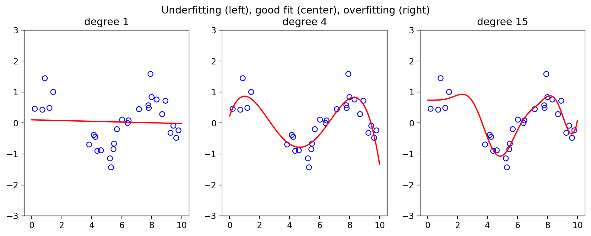
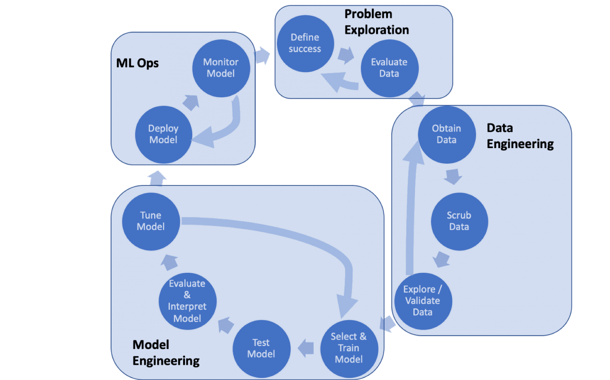
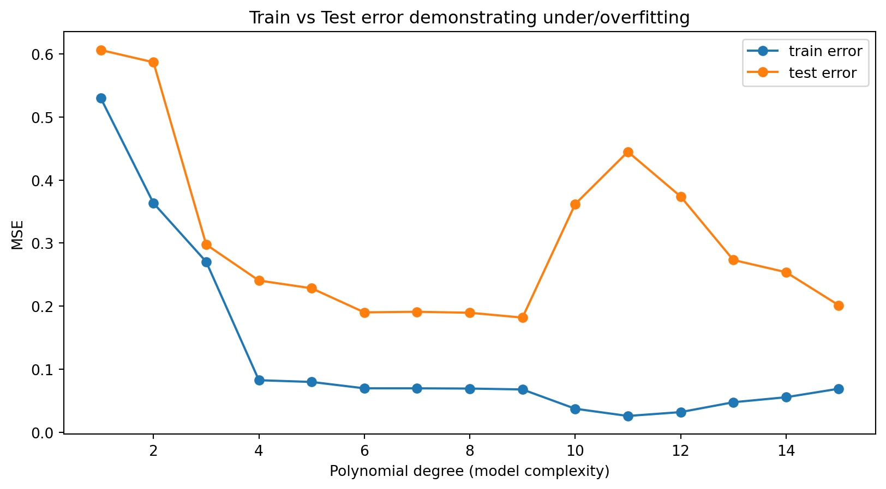
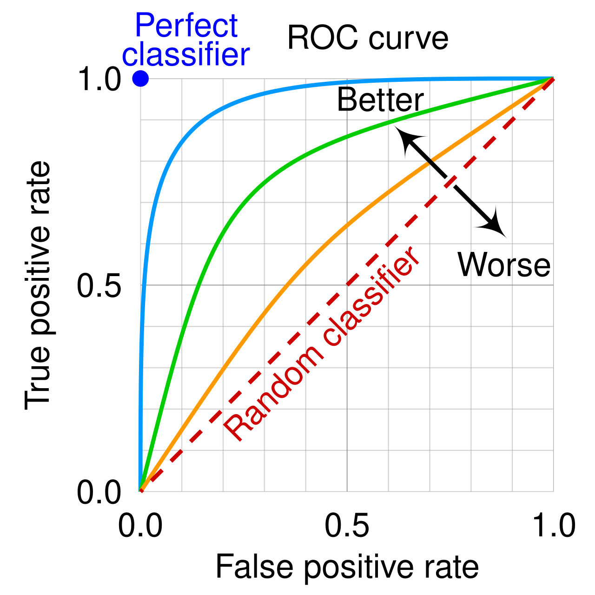
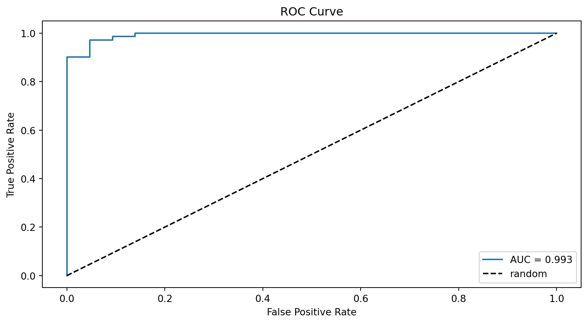

5. Train Tune Evaluate
3316512 Pharmaceutical AI
Natapol Pornputtapong, PhD
Chulalongkorn University
11 Mar 2026
Overview: The Role of Training Data

Model Selection
- Choosing the right algorithm and hyperparameters is critical for good performance.
- We rely on validation techniques to compare models fairly and avoid overfitting.
Fitting and Generalization
- Fit: training a model means adjusting its parameters to minimize error on the training data.
- Goal is generalization – low error on unseen data, not just the training set.
Underfitting vs Overfitting
| Phenomenon | Description | Symptoms |
|---|---|---|
| Underfitting | Model too simple for the data | high error on train and test |
| Overfitting | Model too complex; memorizes noise | low train error but high test error |
| Just right (generalizes) | Complexity matches data | low error on both train and test |
plot compare
Visualization: imagine a tight linear line vs an overly wiggly curve.
Train‑Test Curves

Cross‑Validation Techniques
The basic idea is to partition data into folds, train on some and validate on others.
- k‑fold CV: split into k equal parts, rotate which fold is held out.
- Stratified k‑fold CV: split into k equal parts, rotate which fold is held out.
- Leave‑one‑out (LOO): extreme case of k‑fold where k equals number of samples. Good for small datasets but expensive.
When to Use Which
- LOO: small datasets, high variance & high compute
- k‑fold: standard choice, use 5 or 10 folds
- Stratified: always for classification unless data is balanced
Evaluation Metrics Provided by scikit-learn
- confusion_matrix
- accuracy
- precision
- recall
- f1
- roc_auc
Confusion Matrix
Real vs Predicted table form:
| Predicted Positive | Predicted Negative | |
|---|---|---|
| Actual Positive | TP | FN |
| Actual Negative | FP | TN |
Accuracy
\text{Accuracy} = \frac{TP + TN}{TP + TN + FP + FN}
Precision / Recall / F1
Precision = \frac{TP}{TP + FP} Recall (Sensitivity) = \frac{TP}{TP + FN} F1 score = 2 \cdot \frac{\text{precision} \cdot \text{recall}}{\text{precision} + \text{recall}}
ROC Curve & AUC
- ROC plots True Positive Rate vs False Positive Rate.
- AUC is area under the curve: a summary of separability.

Cross‑Validation: k‑fold CV, LOO
Stratified k‑fold CV
What Are Hyperparameters?
- Parameters are learned from training data (weights, coefficients).
- Hyperparameters are set before training (e.g. regularization strength, number of trees).
- They control model complexity, learning rate, and other behaviors.
Example: in SVC(C=1.0, kernel='rbf'), C and kernel are hyperparameters; the support vectors are parameters.
Once set, the model is trained with those hyperparameters using data.
Example hyperparameters
| Model | Typical hyperparameters |
|---|---|
| SVM (SVC) | C, kernel, gamma |
| RandomForestClassifier | n_estimators, max_depth, min_samples_split |
| KNeighborsClassifier | n_neighbors, weights, p |
| LogisticRegression | C, penalty, solver |
Hyperparameter Tuning & Common Algorithms
Hyperparameters are settings that cannot be learned from data; tuning them can dramatically improve performance.
- Grid search: exhaustive search over a predefined grid (see next slide for code).
- Randomized search: sample a fixed number of parameter settings from distributions.
- Bayesian optimization (libraries like
scikit-optimize,optuna): smarter exploration.
Grid Search
Grid search exhaustively explores a specified parameter grid. Each combination is evaluated using cross‑validation, and the best set is selected based on a scoring metric.
Key points:
- Define a parameter grid as dict of lists.
- Use
GridSearchCVto wrap an estimator. - It runs
fitrepeatedly on CV folds, so computational cost grows with grid size. - For large spaces, consider
RandomizedSearchCVor Bayesian optimization.
Example: Breast Cancer Dataset
We’ll use scikit-learn’s built-in breast cancer toy dataset to illustrate model selection.
from sklearn.datasets import load_breast_cancer
from sklearn.model_selection import train_test_split, GridSearchCV
from sklearn.svm import SVC
from sklearn.tree import DecisionTreeClassifier
from sklearn.ensemble import RandomForestClassifier
from sklearn.metrics import classification_report
# load data
X, y = load_breast_cancer(return_X_y=True)
X_train, X_test, y_train, y_test = train_test_split(X, y,
test_size=0.2,
random_state=42)Grid Search with Cross‑Validation
param_grid = {
'C': [0.1, 1, 10],
'kernel': ['linear', 'rbf'],
'gamma': ['scale', 'auto']
}
svc = SVC()
grid = GridSearchCV(svc, param_grid, cv=5, scoring='accuracy')
grid.fit(X_train, y_train)
print('Best params:', grid.best_params_)
print('Best CV score:', grid.best_score_)
best_model = grid.best_estimator_
y_pred = best_model.predict(X_test)
print(classification_report(y_test, y_pred))Best params: {'C': 1, 'gamma': 'scale', 'kernel': 'linear'}
Best CV score: 0.956043956043956
precision recall f1-score support
0 0.97 0.91 0.94 43
1 0.95 0.99 0.97 71
accuracy 0.96 114
macro avg 0.96 0.95 0.95 114
weighted avg 0.96 0.96 0.96 114
- The grid search tries combinations of hyperparameters and evaluates with 5‑fold CV.
- Best model is then tested on the held‑out test set for an unbiased estimate.
Comparison: Multiple Algorithms
svc CV acc 0.9032967032967033
dt CV acc 0.9252747252747252
rf CV acc 0.9582417582417582- Here we compare SVM, decision tree, and random forest using default settings.
- The model with highest cross‑validation accuracy is preferred, but hyperparameter tuning is often necessary.
Accuracy
Precision / Recall / F1
Confusion Matrix
ROC Curve & AUC calculation
from sklearn.svm import SVC
from sklearn.metrics import roc_auc_score, roc_curve, accuracy_score
import matplotlib.pyplot as plt
# train a simple classifier (could be result of grid search)
model = SVC(probability=True, kernel='rbf', C=1.0).fit(X_train, y_train)
y_pred = model.predict(X_test)
print('Test accuracy', accuracy_score(y_test, y_pred))
proba = model.predict_proba(X_test)[:,1]
print('ROC AUC', roc_auc_score(y_test, proba))Test accuracy 0.9473684210526315
ROC AUC 0.9934490664919751ROC Curve plotting
# compute ROC curve
fpr, tpr, thresholds = roc_curve(y_test, proba)
plt.figure()
plt.plot(fpr, tpr, label=f'AUC = {roc_auc_score(y_test, proba):.3f}')
plt.plot([0,1], [0,1], 'k--', label='random')
plt.xlabel('False Positive Rate')
plt.ylabel('True Positive Rate')
plt.title('ROC Curve')
plt.legend(loc='lower right')
plt.show()